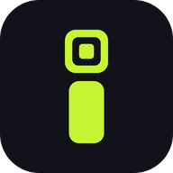

İşyer
Üyelik, QR Giriş ve Randevu
Bağlanıyor…
Sunucuya şu an ulaşılamıyor. İnternet bağlantını kontrol et; bağlantı geldiğinde otomatik devam edilecek.

Üyelik, QR Giriş ve Randevu
Bağlanıyor…
Sunucuya şu an ulaşılamıyor. İnternet bağlantını kontrol et; bağlantı geldiğinde otomatik devam edilecek.